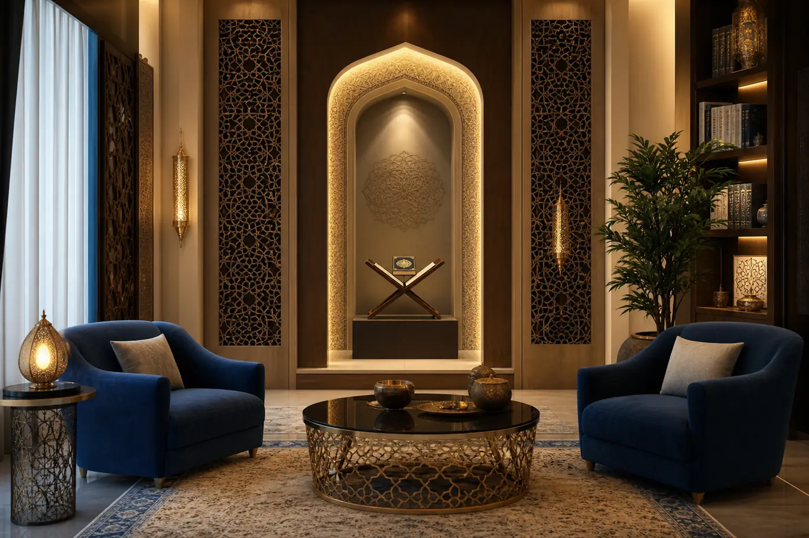
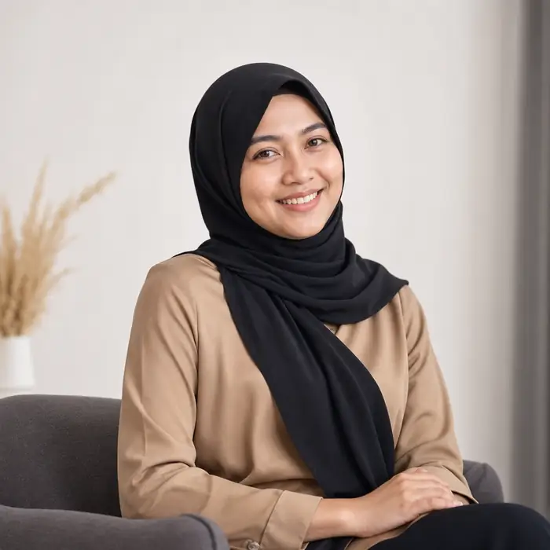
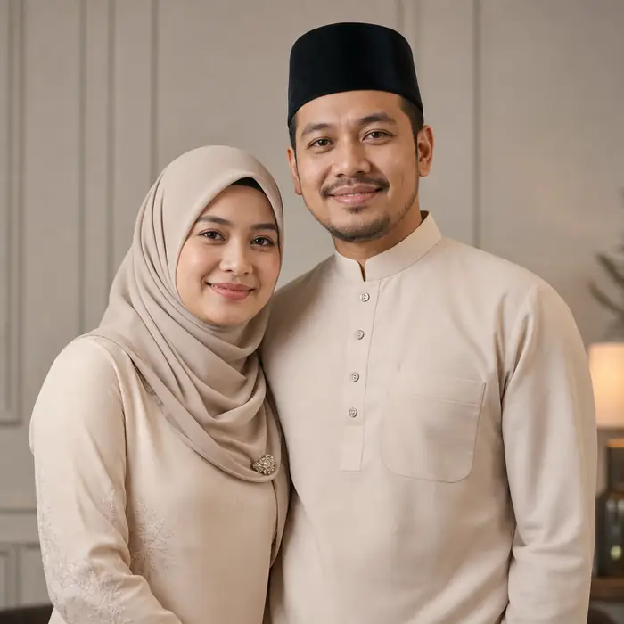

Konsultasi Premium
Saringan awal mendalam untuk faham keadaan individu/keluarga.
Rawatan berlandaskan Al-Quran & Sunnah, menjaga adab, privasi, dan ketenangan pelanggan dari konsultasi awal hingga pelan susulan.

Saringan awal mendalam untuk faham keadaan individu/keluarga.
Bacaan ayat rukyah, doa ma’thur, serta panduan ibadah yang jelas.
Checklist amalan & pemantauan susulan untuk kestabilan rohani.
45-90 minit, bergantung keperluan kes.
Ada untuk konsultasi awal dan panduan asas.
Kami beri pelan amalan yang praktikal dan mudah ikut.

“Layanan sangat beradab. Saya rasa jauh lebih tenang lepas sesi.”
— Puan N“Penjelasan jelas, tak seram-seram. Saya faham apa amalan susulan kena buat.”
— Encik H
“Sesi tersusun, privasi dijaga. Sangat profesional dari awal sampai akhir.”
— Pasangan M&AKlik WhatsApp untuk semakan slot terdekat.
WhatsApp Admin